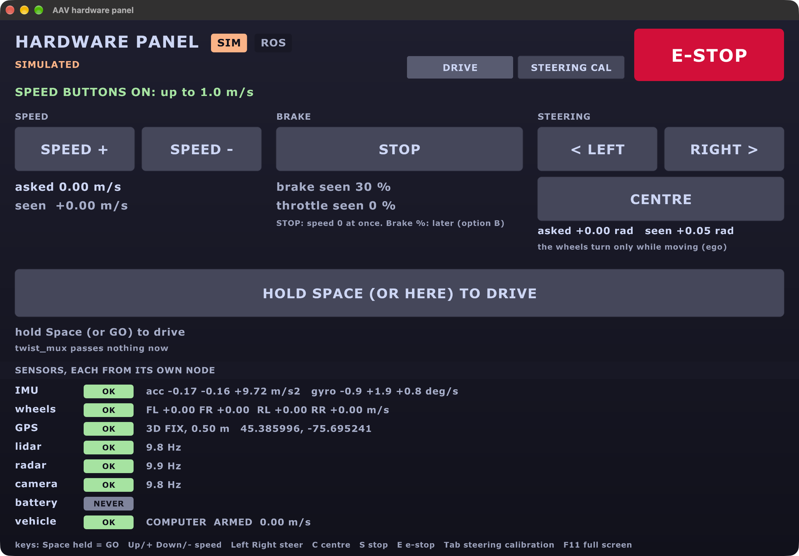
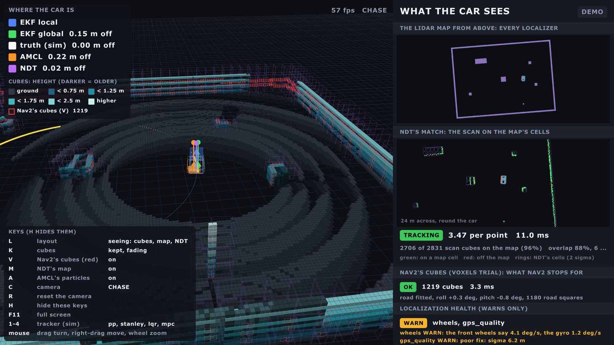
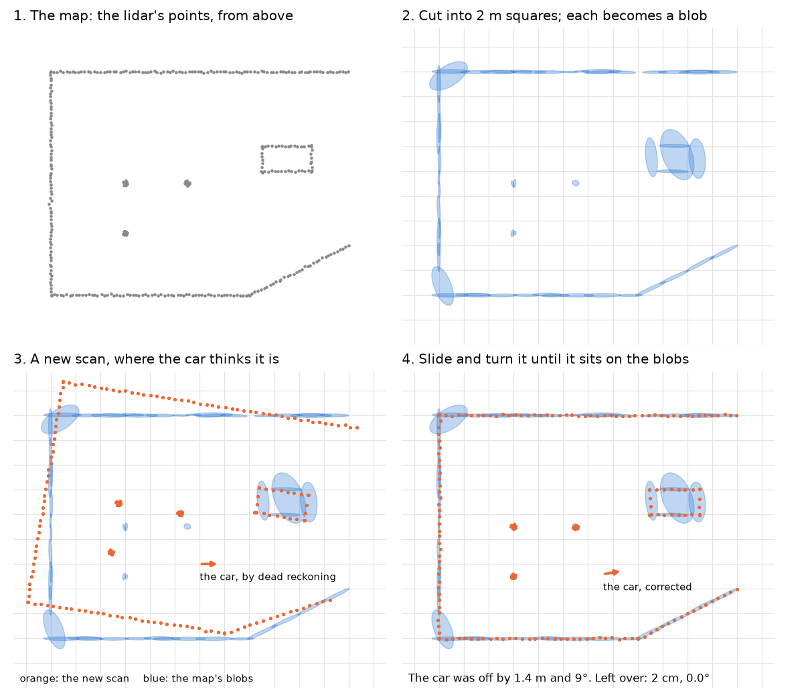
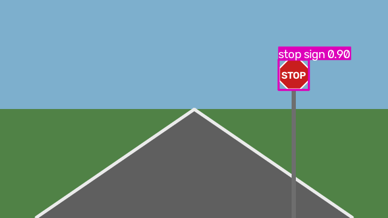
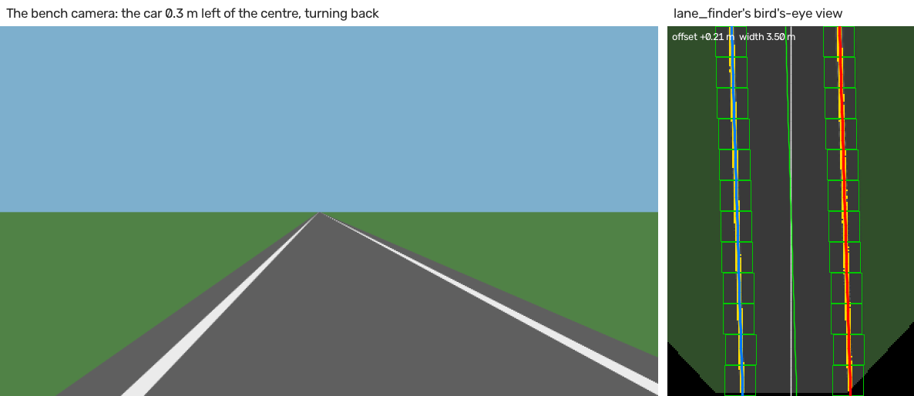
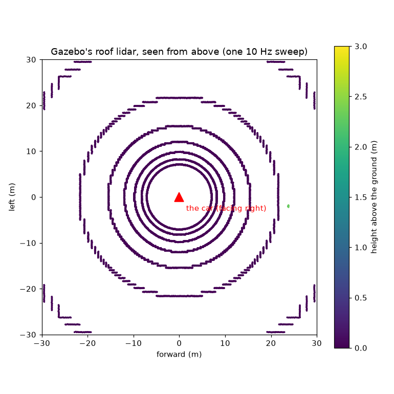
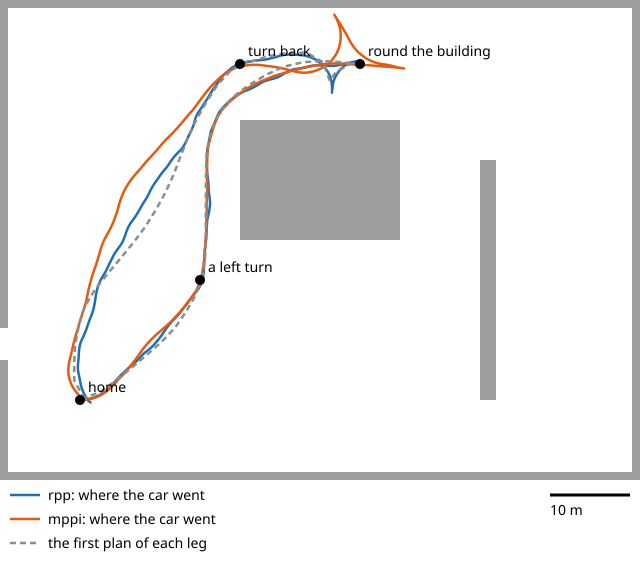

Everything the last few pull requests added (#13 to #19, and the branch after), by area. The full list of every feature, with who built it: Features. How to switch each trial on: Switches.
The short version - Screens: a hardware panel with simple buttons, and a debug screen that shows what the car sees in 3D. - Where am I: the lidar's point cloud now feeds NDT (a map match) and KISS-ICP (how far it moved), beside the two EKFs. - What's around: RF-DETR (not YOLO) for objects, OpenCV for lanes, the lidar as a flat scan or as cubes. - Getting there: five planners, six path followers, reversing and the U-turn. - Talking to it: a local Qwen model with our own harness, and MCP so Claude can drive the sim. - Everything here has run in Gazebo; none of it has driven the real car yet.
sensors ──► localization ──► perception ──► navigation ──► ego ──► the car
(lidar, (EKFs, NDT, (RF-DETR, (planners, (spine,
GPS, IMU) KISS-ICP) lanes, cubes) followers) ESP32)
screens: hardware panel, debug screen · language: Qwen, MCP, ClaudeStatus: sim = works in Gazebo; built = built and tested, not yet in a full run.
Hardware interface: the two screens
The hardware panel (pixi run hw-panel)
Every sensor's number from its own node, and very simple buttons: speed up and down, left, right, centre, stop. The car moves only while you hold Space (or GO).

| What | Why | Status |
|---|---|---|
| OK / STALE / NEVER for each sensor | see at a glance what's missing | sim |
| Hold to drive, through twist_mux's slot 45 | a person always outranks it; let go and it stops | sim |
| SIM and BENCH only | not on the real car until its own test (TODO 49b) | built |
The debug screen (pixi run debugdemo)
Left: the lidar as cubes in 3D, and where each localizer thinks the car is. Right: the lidar map from above, and NDT's match. New on 1 Nov: Nav2's cubes in red (key V), and localization health.

| Colour | Who says where the car is |
|---|---|
| blue | EKF local (wheels, IMU) |
| green | EKF global (plus GPS) |
| purple | NDT |
| orange | AMCL |
| white | Gazebo's truth (sim only) |
The firmware behind it
| What | Who | Status |
|---|---|---|
| The spine's state machine, self-test at boot, hardware test mode | Arsh | built |
| The ESP32's Rust firmware: brakes 111-120 ms after the Orin's heartbeat stops | Ben | built (QEMU) |
The preflight on stands (pixi run preflight) |
Ben | sim |
| Geofence and stop hold (new twist_mux locks) | Ben | sim |
Localization: where am I?
lidar point cloud ─┬─► NDT (on a saved map) ──────────► EKF global (map → odom)
└─► KISS-ICP (how far it moved) ──► EKF local (odom → base_link)
GPS, GPS heading ─────────────────────────────────────► EKF global
wheels, IMU ──────────────────────────────────────────► EKF local| Piece | What it does | Switch | Result in Gazebo | Status |
|---|---|---|---|---|
| EKF local and global | the default: wheels + IMU, then GPS | always | 0.2 m off the truth | sim |
| NDT (ours, Rust) | matches the lidar to a saved map | ndt:=true |
1-3 cm off, 2 ms a match | sim |
| NDT into EKF global | uses that match to correct the map position | ndt_ekf:=true |
17 cm → 1.6 cm; holds with the GPS off | sim |
| KISS-ICP (stock, MIT) | how far the car moved, from lidar alone | kiss_icp:=true |
0.04 m drift per 100 m (wheels: 0.33) | sim |
| KISS-ICP into EKF local | its speed and turn rate into the EKF | kiss_ekf:=true |
not a clear win yet: off by default | sim |
| AMCL (stock) | a particle filter on a 2D map | amcl:=true |
lost itself: the EKF wins | built |
| Health checks (Betsi) | warns on gyro bias, a tilted IMU, bad GPS, wrong frames | health:=true |
on the debug screen, in pixi run check |
sim |
NDT, in one picture
The map becomes blobs; a new scan slides and turns until it sits on them.

ICP, in one picture
Each scan point pairs with its nearest map point; move to close the pairs; repeat.

Perception: what's around?
| Piece | What it does | Result | Status |
|---|---|---|---|
| RF-DETR Nano (not YOLO; Apache-2.0) | finds objects and stop signs | a stop sign from 20 m (YOLO11n: 10 m), no false finds | sim |
| A second detector on a Mac (Core ML) | a second opinion over WiFi | 21 ms a picture on a MacBook | sim |
| Lane finder (classic OpenCV, no model) | finds the lane from the camera | 0.78 ms a picture | sim |
| Radar clustering (Rust) | radar points into objects | the same answers as the C++, bit for bit | sim |


Navigation in 2D and 3D: the lidar for Nav2
The lidar sends about 29,000 points ten times a second. Nav2 reads them one of two ways:
| Flat scan (2D, the default) | Cubes (3D, a trial: voxels:=true) |
|
|---|---|---|
| What | one slice: 720 distances round the car | 0.25 m cubes, measured from the road fitted to each cloud |
| Size | 720 numbers | about 1,200 cubes |
| Sees height? | no | yes: a kerb, a table edge; a leaning car doesn't see the road |
| Result in Gazebo | the default | stopped 0.44 m before a post; 4 of 4 legs; 6 ms a cloud |

Navigation: the route and the steering
Planners: who draws the route (planner:=)
| Planner | Keeps to the turning circle? | Gazebo, the lot tour | |
|---|---|---|---|
| State Lattice (on our own moves) | yes | every leg, 184 s a tour (with reversing) | the default since 1 Nov |
| Hybrid-A* | yes | every leg, 213 s | the default when forward only |
| Lattice, 32 headings | yes | every leg, 197 s: no better | trial |
| Smac 2D | no | 2 of 4 (forward only) | trial |
| NavFn, Theta* | no | not tried | trial |
The lattice strings together short moves our car can really make, worked out from
vehicle.yaml (pixi run lattice-primitives):

Path followers: who steers along it
29 Oct, Gazebo's lot, forward only, 3 runs each:
| Follower | Legs finished (of 12) | Note |
|---|---|---|
| Pure pursuit | 12 | ours, the simplest |
| Stanley | 12 | ours |
| MPC | 12 | ours, 6 ms worst |
| RPP (Nav2) | 10 | |
| MPPI (Nav2, the default) | 8 | lost the U-turn; reads the costmap, which the others don't |
| LQR | 8 | swings wide at full lock |
tracker:=pure_pursuit (or stanley, lqr, mpc) swaps them; in Gazebo, live, with
keys 1-4 on the debug screen.
Reversing and the U-turn
On again on the car since 1 Nov, at 0.5 m/s at most, only where the lidar watches behind. Forward only, a U-turn in a narrow lane fails about half the time; reversing, the car makes a three-point turn (16 of 16 legs with the lattice).

Talking to the car
you ──► talk (Qwen 3, on this computer) ──► drive server (MCP) ──► the car's actions
Claude Code ─────────────────────────────► drive server (MCP)
Claude Code ─────────────────────────────► read-only server (MCP): docs, contract, live graph| Piece | What it does | Status |
|---|---|---|
Qwen 3 (4B) with our own harness (pixi run -e llm talk) |
plain English ("drive 10 m forward") into steps, on the laptop, no internet; asks yes before the car moves | sim |
The harness (aav_language: react.py) |
our own ReAct loop: reads Qwen's, Llama's, Gemma's and Mistral's tool formats | sim |
MCP drive server (aav-drive) |
lets Claude (or any MCP app) drive: distance, turn, go to a GPS point, stop, e-stop; hard limits it won't break | sim |
MCP read-only server (aav) |
lets Claude read the docs, the topic contract and the live ROS graph; never writes | built |